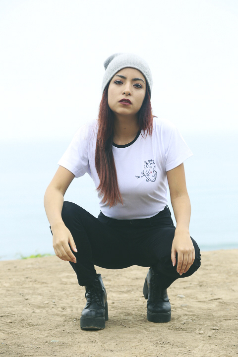
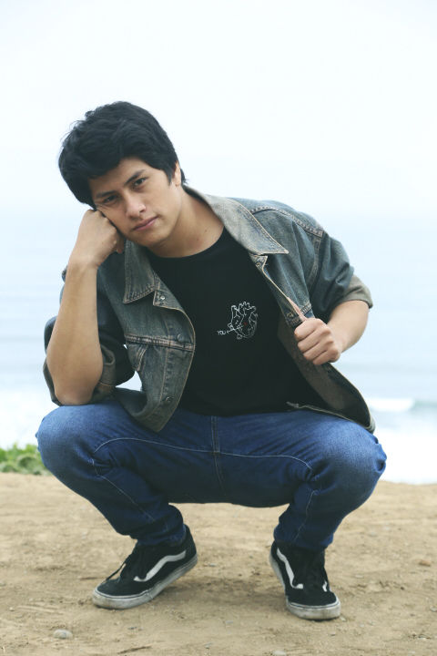
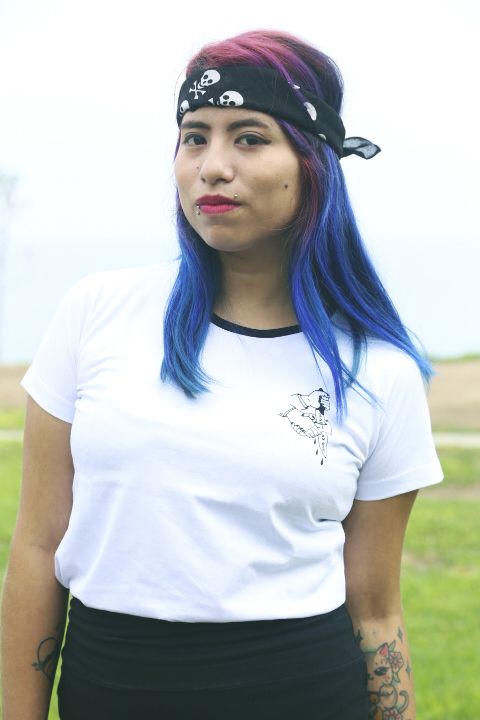
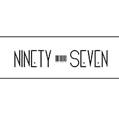

LO NUEVO
- 
- 
- 
QUIÉNES SOMOS
Somos una tienda de ropa vintage y diseño independiente ubicada en Calle Cantuarias 140 tienda 103 y 137 Miraflores. Ofrecemos variedad de prendas vintage, camisas, casacas, blusas, pantalones, shorts, overalls, bomber jackets, faldas, etc. Contamos con distintas marcas de diseño y accesorios independiente. El equipo de Sweet Jungle se encuentra altamente calificado y tiene claro que nuestros clientes son nuestra prioridad número uno y cada uno de ellos merece un trato especial, merece sentirse asesorado y seguro de la prenda que adquirirá. Nuestra misión es ofrecer estilo y calidad al mejor precio. Es por eso que trabajamos con nuestros proveedores para el desarrollo de cada producto ofrecido.
- 
PREGUNTAS FRECUENTES
-
¿DEBEN LAVARSE LAS PRENDAS VINTAGE DE SWEET JUNGLE ANTES DE SER UTILIZADAS POR PRIMERA VEZ?
Sweet Jungle cuenta con prendas vintage de segunda y primera mano.
Cada prenda al ser adquirida pasa por un riguroso control de limpieza que consta desde modificación de cierres, botones y lavado completo utilizando los mejores implementos.
Por este motivo, no es necesario lavar la ropa de Sweet Jungle antes de usarla por primera vez. -
¿QUÉ ES VINTAGE?
Vintage en el ámbito de la moda es un término empleado para referirse a prendas de vestir con cierta edad, que fueron diseñados y fabricados en la época a la que pertenece su estilo y que no pueden aún catalogarse como antigüedades. -
¿TODA LA ROPA USADA ES VINTAGE?
Lo vintage pertenece genuinamente al pasado, ha sido creado, diseñado y producido en el pasado (debe tener de 20 a 100 años, ya que todas las prendas que rebasan el siglo son consideradas antigüedades), y, como tal, se encuentra en buen estado y tiene un valor estético intrínseco. -
¿TODO LO VINTAGE ESTÁ USADO?
No necesariamente, hay muchas prendas que nuestros proveedores nos entregan, vienen con la etiqueta y nunca han sido usadas, pero que se consideran vintage porque tienen más de 20 años. -
LA ROPA VINTAGE DEBE SER SIEMPRE BARATA
No necesariamente. Esto se debe a que el conseguir piezas únicas conlleva un gran tiempo y trabajo de selección.
Elegimos con mucho cuidado y amor prendas únicas que luego del proceso de curación se pondrán a la venta en nuestra Sweet Jungle.
También existen piezas, sobre todo las que llevan firma de diseñador y marcas reconocidas, que son sumamente deseadas, por lo que la demanda supera la oferta que hay de éstas en el mercado, y hace que sus precios se eleven .
PAGOS Y DEVOLUCIONES
-
Devoluciones y reembolsos
No tendremos problema de cambiar cualquier prenda de vestir con la que hayas tenido cualquier tipo de inconveniente (talla, color, modelo).
Sólo debes devolverla en las mismas condiciones en que fue adquirida, en un plazo máximo de tres días junto con la boleta de compra.
Las devoluciones y cambios no son aplicables a ofertas. Los reembolsos son aplicables solo si la prenda se encuentra con algún tipo de falla. -
Pagos
Aceptamos la tarjeta de crédito: Visa.
>Hacemos envios a todo el Perú a través de la empresa Olva Courrier por un costo adicional de 12.50 a todo Lima y 17.50 soles a provincia (el pedido es enviado a tu domicilio en un plazo máximo de dos días hábiles y entregado en dos días más).
>Se hace un cobro adicional por el descuento que hace el banco por depósitos de provincia. (Interbank: 2.50 – BCP: 7.50). -
Reservación de prendas
>A pesar de que somos una tienda física y el stock de prendas vintage es único por modelo y talla. Sabemos que muchos de nuestros clientes son de provincia y se encuentran alejados de la tienda, por eso tenemos preferencia en reservar prendas con este tipo de clientes.
>Al reservar una prenda te comprometes a hacer el pago vía deposito, el mismo o al siguiente día.
>De pasar la fecha estipulada la prenda pasara a la venta en tienda nuevamente, vetando al que la separó para hacer reservaciones futuras.
Contáctanos
Suscríbete para más información sobre nuestros productos.